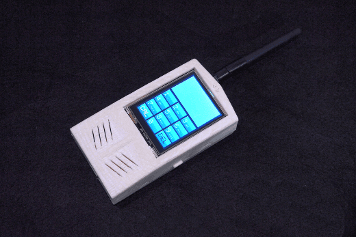

LoNet is a GSM and GPS two-in-one function module. It is based on the latest GSM/GPS module SIM808 from SIMCOM, supports GSM/GPRS Quad-Band network and combines GPS technology for satellite navigation.
It features ultra-low power consumption in sleep mode and integrated with charging circuit for Li-Ion batteries, that make it get a super long standby time and convenient for projects that use rechargeable Li-Ion battery. It has high GPS receive sensitivity with 22 tracking and 66 acquisition receiver charnels. Besides, it also supports A-GPS that available for indoor localization.
The module is controlled by AT command via UART and supports 3.3V and 5V logical level. It comes with a mini GPS and GSM antenna, but not includes Li-Po battery. In addition, to use this module, you still need an unlock SIM-Card supporting GPRS service.
| LED | Status | Function |
|---|---|---|
| Status Indicator (Green) | Off | Power of LoNet is off |
| On | Power of LoNet is on | |
| Net Indicator (Red) | Off | Power of LoNet is off |
| 64ms on/800ms off | LoNet can't find the network | |
| 64ms On/3000ms Off | LoNet has connected to network | |
| 64ms ON/3000ms Off | GPRS communication |
The module comes with a mini GPS and GSM antenna, but not includes Li-Po battery. In addition, to use this module, you still need a unlock SIM-Card that supports GPRS service. Ready for these parts, we can start for assembly.
The module is controlled by AT command via serial port, here we use Arduino as USB to serial tool. Upload the following code to Arduino and open the serial monitor. If you use other USB to serial tools, you can use AT Command Tester or SSCOM32 to test AT commands.
// this sketch is used for testing LoNet with Arduino
// Connect VIO to +5V
// Connect GND to Ground
// Connect RX (data into SIM808) to Digital 11
// Connect TX (data out from SIM808) to Digital 10
#include <SoftwareSerial.h>
SoftwareSerial mySerial(10, 11); // RX, TX
void setup()
{
// Open serial communications and wait for port to open:
Serial.begin(9600);
mySerial.begin(9600);
}
void loop() // run over and over
{
if (mySerial.available())
Serial.write(mySerial.read());
if (Serial.available())
{
while(Serial.available())
{
mySerial.write(Serial.read());
}
mySerial.println();
}
}
It is recommended to execute this process when first time to use the module. In the Serial Monitor columns of following tables, input of AT commands are in back, module returns values are in orange.
| Serial Monitor | Description |
|---|---|
| AT OK |
Send command “AT” to synchronize baud rate. Serial port of module is by default set at auto-baud mode, and in this mode, it will not output any indications when the module is on. |
| AT+IPR=9600 OK |
Set baud rate at 9600bps, supports baud rate from 1200bps to 115200bps. |
| AT+ECHARGE=1 OK |
Send command “AT+ECHARGE=1” to enable battery charging function. By default the charging function is closed. |
| AT&W OK |
Save parameter setting. |
| AT+CPOWD=1 NORMAL POWER DOWN |
Power down the module. |
| RDY +CFUN: 1 GPS Ready +CPIN: READY Call Ready SMS Ready |
Turn on the module again by the power button, it will response status about GPS and GSM. |
| AT+CBC +CBC: 1,96,4175 OK |
Inquire charging status and remaining battery capacity. |
| AT+CSQ +CSQ: 14,0 OK |
Inquire GSM signal quality. |
| Serial Monitor | Description |
|---|---|
| AT+CGPSPWR=1 OK |
Open GPS |
| AT+CGPSSTATUS? +CGPSSTATUS: Location Not Fix OK |
Read GPS fix status, “Location Not Fix” means that positioning is not successful. For the first time to start, it will take at least 30s. GPS must be tested by the window or outdoor. |
| AT+CGPSSTATUS? +CGPSSTATUS: Location 3D Fix OK |
GPS has fixed with 3D status. |
| AT+CGPSINF=0 +CGPSINF: 0,2234.931817,11357.122485, 92.461185,20141031041141.000, 88,12,0.000000,0.000000 |
Get the current GPS location information. Parameters formate: <mode>, <altitude>, <longitude>, <UTC time>, <TTFF>, <num>, <speed>, <course> |
| AT+CGPSOUT=32 OK $GPRMC,043326.000,A, 2234.9414,N,11357.1187,E, 0.000,143.69,311014,,,A*50 |
Read NMEA $GPRMC data, of which, “2234.9414 N, 11357.1187 E” is the location coordinates. For more details about NMEA sentences, check this site. |
| AT+CGPSRST=0 OK |
Reset GPS in Cold Start Mode. |
| AT+CGPSRST=1 OK |
Reset GPS in Hot Start Mode. |
| AT+CGPSPWR=0 OK |
Close GPS. |
It's a pity that we don't have any demo about LoNet-GSM/GPRS/GPS Breakout in the Recipe yet.
Post your awesome project about LoNet-GSM/GPRS/GPS Breakout to win $100 Coupon!. Please feel free to contact us: recipe@seeed.cc
Here we introduce some projects about GPRS Shield as a reference.
Features:
This project describes how to turn your hot water heater on and off via SMS and check if it is on or off.
It is reliable, secure, easy and flexible because of the reasons below:

Arduino phone is a cell phone made by ourselves via combining Arduino and other shield modules.
This project tells us what you need to do when Arduino Phone apps can't fit your needs.
This Arduino Phone contains the following main functions.
I want to make it.
More Awesome Projects by GPRS
Born with the spirit of making and sharing, that is what we believe makes a maker.
And only because of this, the open source community can be as prosperous as it is today.
It does not matter what you are and what you have made, hacker, maker, artist or engineers.
As long as you start sharing your works with others, you are being part of the open source community and you are making your contributions.
Now share your awesome projects with us on Recipe, and win a chance to become the Core User of Seeed.
Get more information about Core User, please email to: recipe@seeed.cc
Any tech support, please contact support@deegou.com
We do also provide PCB services ( Electronics design, prototype assembly and batch manufacturing ) If you have any requirements, please contact info@deegou.com
Copyright (c) 2008-2016 Seeed Development Limited (www.seeedstudio.com / www.seeed.cc)